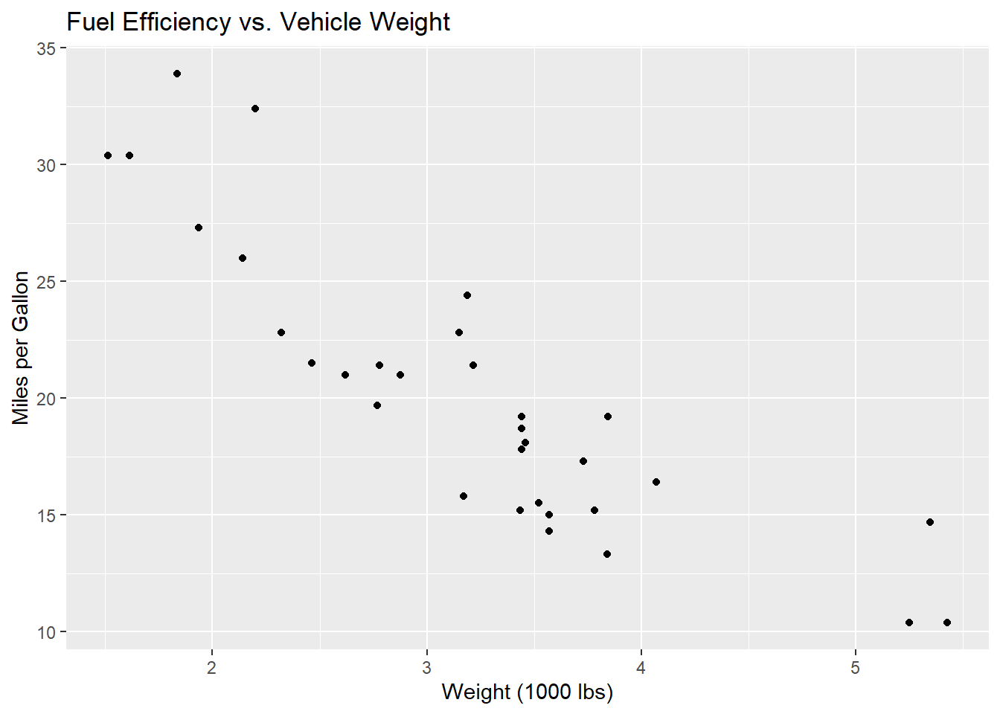
Lesson 2: Project Dataset Exploration
Welcome!
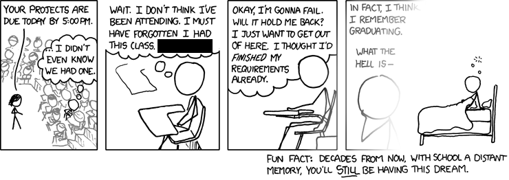
Calendar
Day 1
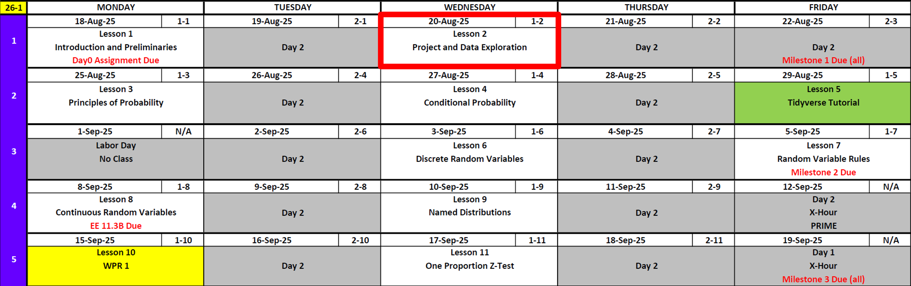
Day 2
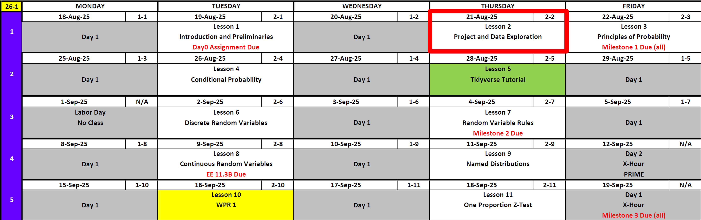
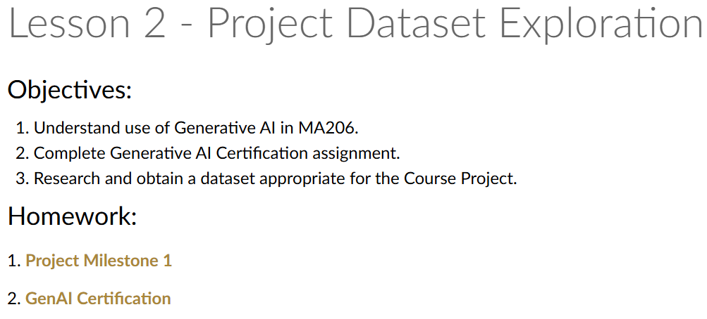
Are You Tired of These Yet?
Reese
Cal
Before We Start
Don’t forget

GenAI Assignment (Due 25 Aug)
Project: The Long View
So what are we doing anyway?
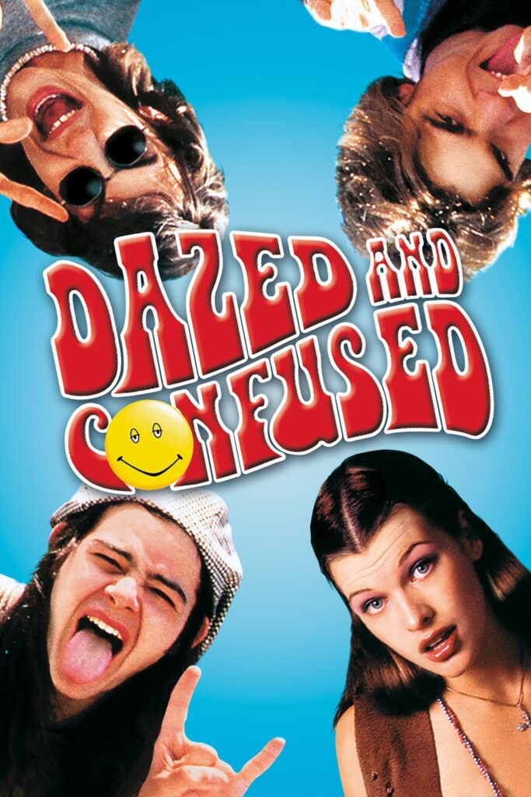
Your work will result in a presentation and a technical report.
Both these files are found on Canvas.
Ultimately, you are going to conduct a linear regression where you determine how much one variable impacted by other variables. For example:
\(y_i = \beta_0 + \beta_1 x_i + \varepsilon_i, \quad i = 1, 2, \dots, n\)
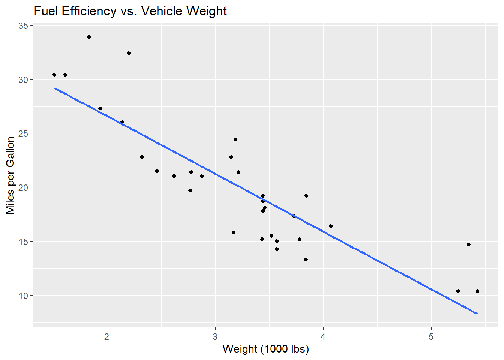
But there might be multiple things that can impact our dependent variable.
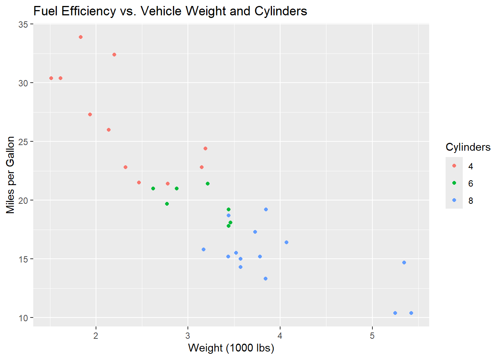
\(y_i = \beta_0 + \beta_1 x_{i1} + \beta_2 x_{i2} + \cdots + \beta_p x_{ip} + \varepsilon_i, \quad i = 1, 2, \dots, n\)
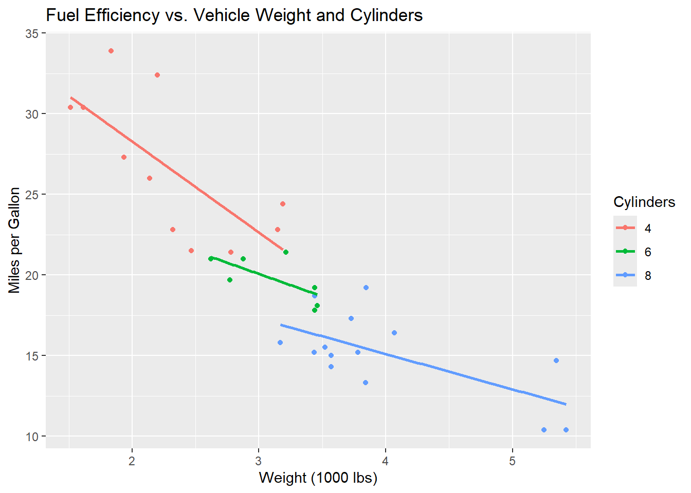
Project Milestone 1
This milestone sets up your binder and makes sure you have acceptable data.
Lets navigate to it on Canvas
Guidance on Assistance
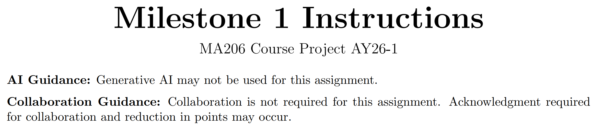
Required Tasks
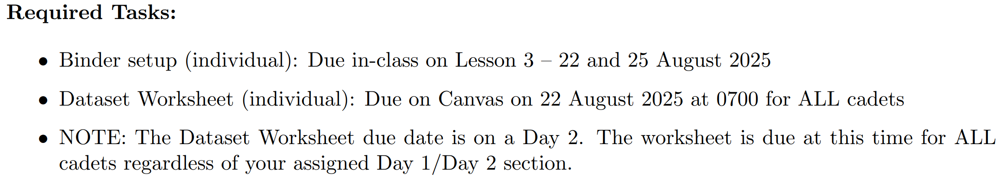
Binder Instructions
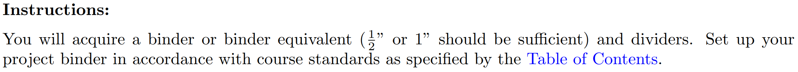
TOC Instructions
Dataset Conversation
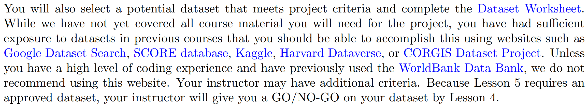
- This are just ideas on where to get data
- We’ll talk about the Dataset Worksheet in a moment
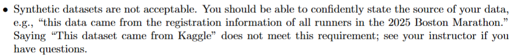
What is synthetic data?
# A tibble: 10 × 6
id sport gender height_cm training_hours run_time_min
<int> <fct> <fct> <dbl> <dbl> <dbl>
1 1 Handball Female 171. 5.7 18.3
2 2 Track Male 183. 7.9 14.5
3 3 Handball Female 152. 6.5 18.7
4 4 Lacrosse Male 187. 5.8 19.3
5 5 Lacrosse Male 179. 5.8 19.2
6 6 Lacrosse Female 170. 6.8 19.1
7 7 Track Female 160. 6.4 17.2
8 8 Handball Male 172. 6.6 19.6
9 9 Track Male 165. 8.7 14.6
10 10 Handball Female 160. 3.9 19.3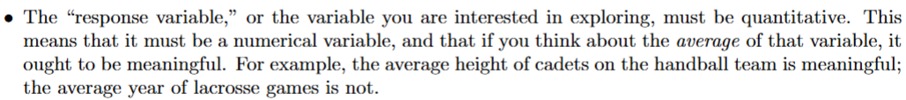
Did we satisfy this?
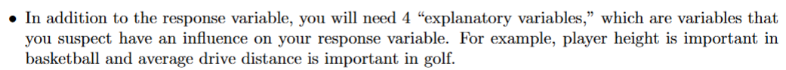
How about this?
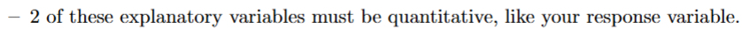
Okay, now this?
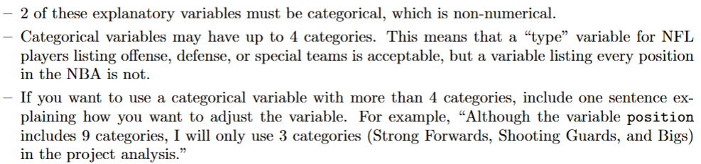
And finally, this!
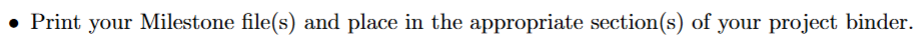
About that Dataset Worksheet
This is where you show me you’ve met the criteria.
Example Data Critique
# A tibble: 53,940 × 10
carat cut color clarity depth table price x y z
<dbl> <ord> <ord> <ord> <dbl> <dbl> <int> <dbl> <dbl> <dbl>
1 0.23 Ideal E SI2 61.5 55 326 3.95 3.98 2.43
2 0.21 Premium E SI1 59.8 61 326 3.89 3.84 2.31
3 0.23 Good E VS1 56.9 65 327 4.05 4.07 2.31
4 0.29 Premium I VS2 62.4 58 334 4.2 4.23 2.63
5 0.31 Good J SI2 63.3 58 335 4.34 4.35 2.75
6 0.24 Very Good J VVS2 62.8 57 336 3.94 3.96 2.48
7 0.24 Very Good I VVS1 62.3 57 336 3.95 3.98 2.47
8 0.26 Very Good H SI1 61.9 55 337 4.07 4.11 2.53
9 0.22 Fair E VS2 65.1 61 337 3.87 3.78 2.49
10 0.23 Very Good H VS1 59.4 61 338 4 4.05 2.39
# ℹ 53,930 more rows carat cut color clarity depth
Min. :0.2000 Fair : 1610 D: 6775 SI1 :13065 Min. :43.00
1st Qu.:0.4000 Good : 4906 E: 9797 VS2 :12258 1st Qu.:61.00
Median :0.7000 Very Good:12082 F: 9542 SI2 : 9194 Median :61.80
Mean :0.7979 Premium :13791 G:11292 VS1 : 8171 Mean :61.75
3rd Qu.:1.0400 Ideal :21551 H: 8304 VVS2 : 5066 3rd Qu.:62.50
Max. :5.0100 I: 5422 VVS1 : 3655 Max. :79.00
J: 2808 (Other): 2531
table price x y
Min. :43.00 Min. : 326 Min. : 0.000 Min. : 0.000
1st Qu.:56.00 1st Qu.: 950 1st Qu.: 4.710 1st Qu.: 4.720
Median :57.00 Median : 2401 Median : 5.700 Median : 5.710
Mean :57.46 Mean : 3933 Mean : 5.731 Mean : 5.735
3rd Qu.:59.00 3rd Qu.: 5324 3rd Qu.: 6.540 3rd Qu.: 6.540
Max. :95.00 Max. :18823 Max. :10.740 Max. :58.900
z
Min. : 0.000
1st Qu.: 2.910
Median : 3.530
Mean : 3.539
3rd Qu.: 4.040
Max. :31.800
So Where Can I Get Data?
I’m glad you asked!
Before you leave
To Get Ahead
Annex B Milestone 2 has you do the Tidyverse Tutorial on your own data
Today:
- Any questions for me?
Lesson 3 Principles of Probability
Upcoming Graded Events
- Project Milestone 1: Due 22 Aug (Friday) All Sections
- GenAI Certification: Due 25 August (Monday) All Sections